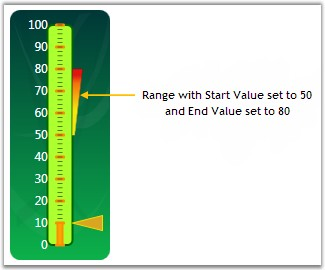

Ranges are objects that highlight a range of values. Ranges can be customized using various attributes such as Range Positioning, Distance of the ranges from the scale, Start and End width of the range and so on. All the available attributes are listed below.
Table 21: Property Table
|
Property |
Description |
|
StartValue |
Specify the start value of the range. Default value is set to 0. |
|
EndValue |
Specify the end value of the range. Default value is set to 0. |
|
StartWidth |
Specify the start width of the Range. Default value is set to 0. |
|
EndWidth |
Specify the end width of the Range. Default value is set to 0. |
|
DistanceFromScale |
Specify from which distance the range should be displayed from the scale. Default value is set to 0. |
|
RangePosition |
Using this attribute, range can be positioned in three areas along the linear scale. It includes the following options.
Cross Inside Outside
Default value is Inside. |
|
[XAML]
<!--Range for Linear gauge with start and end value.--> <syncfusion:LinearScale.Ranges> <syncfusion:LinearRange StartValue="50" EndValue="80" BorderWidth="0.5" StartWidth="2" EndWidth="10" RangePosition="Outside"> </syncfusion:LinearRange> </syncfusion:LinearScale.Ranges> |
|
[C#]
// Adding Linear Range to the Linear Scale. LinearRange linearRange = new LinearRange(); linearRange.BorderWidth = 0.5; linearRange.StartValue = 50; linearRange.EndValue = 75; linearRange.StartWidth = 2; linearRange.EndWidth = 10; linearRange.RangePosition = ScalePlacement.Outside; linearScale.Ranges.Add(linearRange) |
Output of the above settings will be something similar to the below figure.

Figure 72: Linear Ranges